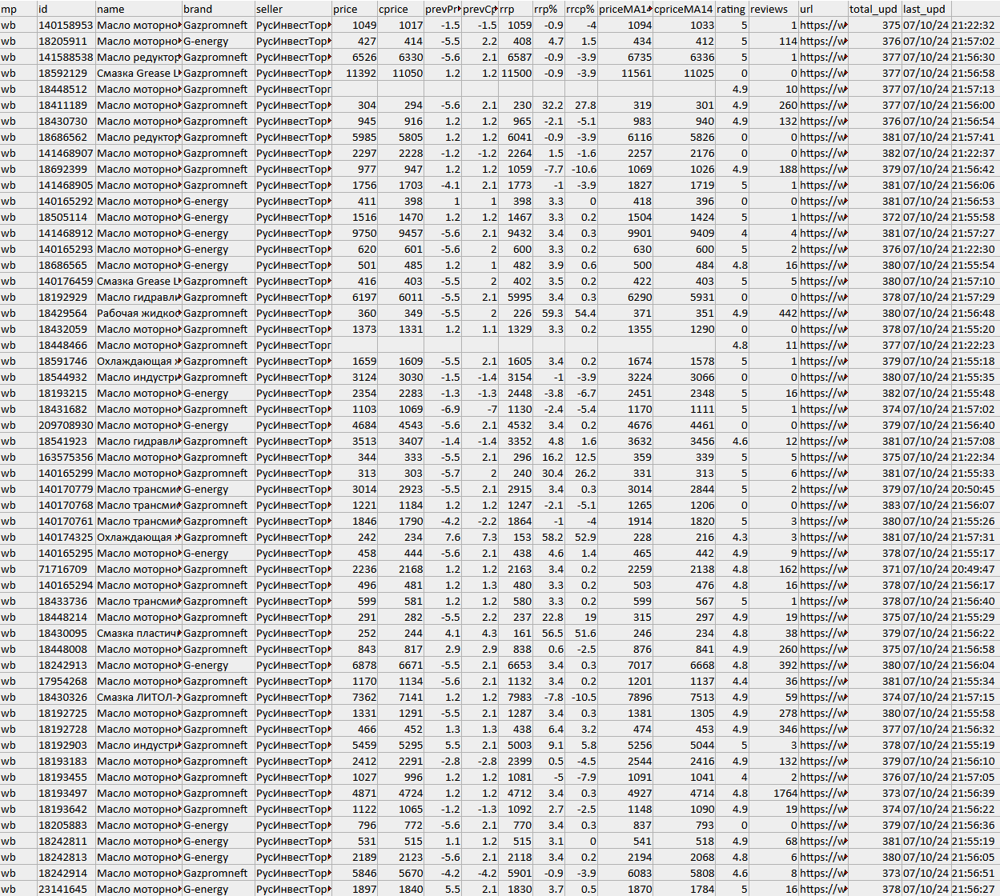
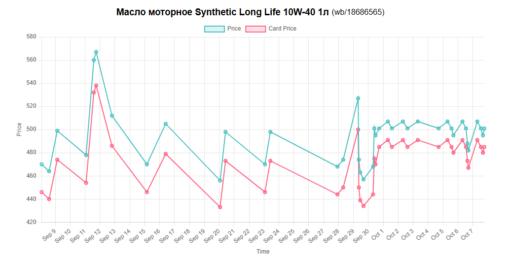

RustScraper - это мощный инструмент для автоматизированного мониторинга товаров на различных торговых площадках. Он предоставляет пользователям возможность быть в курсе всех изменений, происходящих с интересующими их товарами, без необходимости постоянного ручного отслеживания.
Парсер доступен через Telegram-бота @rust_scraper_bot, что обеспечивает универсальный доступ с различных устройств и операционных систем. Такой подход гарантирует широкую совместимость и удобство использования независимо от платформы пользователя. Пользователям не нужно устанавливать дополнительное программное обеспечение, кроме самого Telegram. Обновления бота происходят на стороне сервера, поэтому пользователям не нужно заботиться об обновлении клиентской части. Встроенная система уведомлений Telegram может использоваться для информирования пользователей о завершении задач парсинга.
Как это работает
- Загрузка данных: Пользователь добавляет в бота таблицы с информацией о товарах, которые его интересуют.
- Умный парсинг: Бот начинает автоматически отслеживать эти товары на различных торговых площадках.
- Мгновенные уведомления: По окончании парсинга бот присылает уведомления об обновлении товаров.
- Доступ к данным: Загрузка графиков и таблиц с актуальными данными.
Доступ
Доступ к боту предоставляется только по специальному ключу, который можно получить, обратившись по этому контакту. Ключ может быть выдан как для тестового периода, так и на платной основе в формате подписки.
Документация
Эта документация поможет вам быстро разобраться, как пользоваться Telegram-ботом @rust_scraper_bot для автоматического мониторинга товаров на торговых площадках. Здесь вы найдете инструкции по основным функциям бота: как начать работу, настраивать таблицы с товарами и управлять данными.
Дата обновления документации: 19.10.2024
Документация охватывает следующие темы:
- Начало работы — Создание таблицы с товарами. Шаблон таблицы
- Добавление таблицы — Как загрузить таблицу с товарами в бота.
- Меню таблицы и управление данными — Интерфейс взаимодейсвия с таблицей. Редактирование таблицы.
- Процесс обновления — Как бот обновляет информацию о товарах и сколько времени это занимает.
- Уведомления — Уведомления об обновлении товаров. Содержание уведомления.
- Итоговая таблица — Описание колонок и индикаторов в итоговой таблице после парсинга.
- Графики — Линейные графики изменения цены на товары в таблице. Работа с графиками.
- Команды бота
- Заключение
Документация разработана для того, чтобы вы могли быстро освоить RustScraper и начать эффективно пользоваться его функциями.
Начало работы
Чтобы бот начал мониторить интересующие вас товары, необходимо загрузить таблицу с товарами в формате Excel. Таблица должна соответствовать определённому шаблону, который бот использует для корректного сбора информации.
Шаблон таблицы должен содержать следующие обязательные колонки:
- mp — Идентификатор торговой плащадки
- id — Артикул товара
На данный момент бот может парсить два маркетплейса:
Используйте следующие идентификаторы в колонке mp:
- oz — для Ozon
- wb — для Wildberries
Итоговый шаблон таблицы должен иметь следующий вид:
| mp | id |
|---|---|
| oz | 1234567890 |
| wb | 1234567890 |
* Одна таблица может содержать товары с разных маркетплейсов.
* Регистр букв в названиях колонок и идентификаторах маркетплейса не имеет значения.
В шаблон таблицы могут входить необязательные параметры:
- rrp — Рекомендованная розничная цена
- rrcp — Рекомендованная розничная цена по карте
Эти параметры будут учитываться в расчете индикаторов в итоговой таблице.
Шаблон таблицы с учетом этих параметров:
| mp | id | rrp | rrcp |
|---|---|---|---|
| oz | 1234567890 | 890 | 833 |
| wb | 1234567890 | 1255 | 1092 |
* Допускаются пропуски необязательных параметров.
* Колонки, не входящие в шаблон таблицы, или пустые колонки будут проигнорированы.
Добавление таблицы
После того как вы составили таблицу с товарами в соответствии с шаблоном из раздела «Начало работы», вам нужно загрузить её в бота для мониторинга. Существует два способа добавления таблицы. Рассмотрим оба варианта.
1. Отправка таблицы напрямую в чат с ботом
Это самый быстрый способ загрузить данные. Просто отправьте файл Excel с таблицей в чат боту, и он автоматически распознает содержимое. После этого бот предложит вам два варианта действий:
- Добавить товары в существующую таблицу — если у вас уже есть таблицы, бот предложит выбрать одну из них.
- Создать новую таблицу — если вы хотите создать новую таблицу, нажмите кнопку «🆕 Создать таблицу». Новая таблица будет создана с названием отправленого файла.
2. Добавление таблицы через меню управления
Этот способ подходит, если вы предпочитаете сначала создать таблицу в интерфейсе бота, а затем загружать в неё товары. Для этого выполните следующие шаги:
- Создайте новую таблицу — в личном кабинете бота нажмите на кнопку «🆕 Создать».
- Зайдите в таблицу — выберите созданную таблицу в списке.
- Нажмите «⬆️ Добавить» — после этого бот запросит отправку файла с товарами.
- Отправьте таблицу — загрузите таблицу в ответ на запрос, и бот добавит товары в эту таблицу.
Отслеживание добавленных товаров
После того как товары будут загружены, вы можете проверить их количество в таблице через мета информацию. Она доступна в меню таблицы и показывает общее количество товаров, которые уже добавлены.
Примечание:
По умолчанию, после создания таблицы парсинг товаров отключен. Чтобы включить режим обновления и начать парсинг, нажмите кнопку «▶️». Подробнее о возможностях редактирования и управлении таблицами вы узнаете в следующем разделе.
После того как таблица добавлена и у нее включен режим обновления товаров «⏸️», бот начнёт отслеживать товары в таблице.
Меню таблицы
В меню каждой таблицы доступен ряд инструментов для управления и работы с данными. Здесь вы можете добавлять товары, изменять настройки отслеживания, редактировать таблицу, а также загружать данные и графики. Давайте подробно рассмотрим функции каждого элемента управления.
Состояние таблицы
Перед названием каждой таблицы отображается специальный значок, который указывает её текущее состояние:
- 🔸 — Таблица пустая, в ней нет товаров для отслеживания.
- 🔹 — В таблице есть товары, но их отслеживание (парсинг) отключено.
- 🔘 — Товары в таблице отслеживаются ботом, и информация регулярно обновляется.
Переключатель отслеживания «▶️» / «⏸️»
Эта кнопка отвечает за включение и отключение режима парсинга (отслеживания) товаров.
- «▶️» — Включить отслеживание товаров. Бот начнёт регулярно обновлять информацию по каждому товару в таблице.
- «⏸️» — Остановить отслеживание. Бот перестанет собирать обновления, но сохранит данные в таблице.
Переименовать таблицу «✏️»
Кнопка переименования позволяет изменить название таблицы. После нажатия бот запросит ввести новое имя, и оно будет применено вместо текущего.
Очистить таблицу «🧹»
Если вам нужно полностью удалить все товары из таблицы, воспользуйтесь этой кнопкой. Она удаляет все данные о товарах, а таблица получает название по умолчанию. Это удобно, если вы хотите использовать её для других целей, не создавая новую.
Удалить таблицу «🗑»
Полное удаление таблицы из вашего списка. Важно отметить, что удаляются только настройки таблицы и список товаров. Сами товары не удаляются — информация о них, включая историю цен и обновления, сохраняется в базе данных бота. Даже после удаления таблицы вы сможете получить данные о этих товарах в будущем, если потребуется.
Кнопки для загрузки данных:
«📈 Графики» — Отправляет историю изменения цен для всех товаров в таблице в виде наглядных графиков. Это помогает отслеживать динамику цен и анализировать изменения на торговых площадках.
«⬇️ Загрузить» — Позволяет скачать итоговую таблицу с актуальными данными по отслеживаемым товарам. В таблице содержится информация о ценах, наличии и других параметрах, собранных ботом.
Меню таблицы предоставляет полный набор инструментов для удобного управления вашими данными: добавление новых товаров, включение и отключение отслеживания, редактирование и загрузка информации. Сохранённые данные и графики позволяют анализировать товары и их изменения на маркетплейсах. В следующем разделе мы рассмотрим, как бот обновляет информацию о товарах и сколько времени занимает этот процесс.
Процесс обновления
Прежде чем перейти к разбору итоговой таблицы после обновления и анализа графиков с историей цен, давайте разберёмся, как бот обновляет информацию о товарах и сколько времени это занимает.
В новой версии бота был значительно улучшен механизм обновления (парсинга) товаров. Если раньше бот обновлял все товары пользователей за один запрос, что могло приводить к задержкам и несоответствиям в ценах, теперь применяется более эффективный подход — сэмплирование товаров.
Как работает обновление:
1. Сэмплирование товаров
Вместо того чтобы обновлять все товары сразу, бот отбирает только те, которые требуют первоочередного обновления. Это позволяет уменьшить список товаров, что ускоряет сам процесс обновления и снижает вероятность возникновения несоответствий данных из-за больших временных промежутков.
2. Фильтрация по приоритетам
Список товаров фильтруется по нескольким критериям:
- Время последнего обновления — товары, которые давно не обновлялись, получают более высокий приоритет.
- «Мёртвые товары» — бот исключает из списка товары, которые не удалось обновить за предыдущие запросы, что позволяет не тратить время на повторные попытки.
3. Постепенное обновление
Обновление товаров теперь происходит быстрее, с меньшими временными разрывами между обновлениями первого и последнего товара в списке. Это решает проблему, когда цены в таблице могли отличаться из-за задержек обновления.
4. Приоритет обновления
Основной приоритет отдается тем товарам, которые давно не обновлялись. Это делает процесс более гибким и эффективным: бот всегда пытается поддерживать актуальные данные для всех товаров, обновляя их по мере необходимости.
Уведомления об обновлениях
После того как группа товаров была обновлена, бот отправляет пользователю уведомление о завершении обновления. Таким образом, вы всегда в курсе того, когда информация по вашим товарам была обновлена, и можете загружать актуальные данные.
Время обновления
- Количество товаров — чем больше товаров, тем больше времени может потребоваться для их обновления.
- Маркетплейс — скорость обновления варьируется в зависимости от торговой площадки. Например, товары с Wildberries обновляются быстрее, так как там меньше технических проблем. В случае с Ozon, процесс может занимать больше времени из-за необходимости обхода блокировок и особенностей парсинга.
Итог
Система обновления товаров работает таким образом, чтобы как можно чаще обновлять информацию и поддерживать её актуальность. За счёт сэмплирования товаров и приоритизации тех, которые давно не обновлялись, бот способен быстрее обновлять данные, минимизируя временные разрывы и предоставляя более точную информацию.
Примечание:
Важно отметить, что наличие «мёртвых товаров» в таблице — товаров, которые невозможно обновить по каким-либо причинам (например, они сняты с продажи или недоступны на маркетплейсе), может негативно сказаться на эффективности работы бота. Такие товары замедляют процесс парсинга, так как бот тратит время на их повторное обновление, которое всё равно не удаётся выполнить.
Чтобы поддерживать высокую скорость обновления и получать актуальные данные, рекомендуется периодически проверять и удалять «мёртвые товары» из таблиц. Это не только ускорит процесс парсинга, но и освободит ресурсы для более приоритетных товаров. Регулярное поддержание чистоты таблиц помогает боту фокусироваться на актуальных данных и обновлять информацию максимально быстро и эффективно.
Уведомления
После каждого обновления товаров бот присылает уведомление, чтобы держать вас в курсе всех изменений. Эти уведомления помогают оперативно отслеживать актуальные данные и вовремя реагировать на изменения цен.

Что включено в уведомление?
В уведомлении отображается важная информация по обновлению таблиц, включая:
- Количество обновленных товаров — сколько товаров из вашей таблицы было успешно обновлено.
- Число зафиксированных изменений цен — сколько товаров изменило свою цену с момента последнего обновления.
- Среднее время обновления товаров — показывает, в какое время примерно обновились все товары.
- Распределение по маркетплейсам — сколько товаров было обновлено с каждого маркетплейса (например, Ozon, Wildberries).
- Процент обновленных товаров — какая доля от всей группы товаров была обновлена за текущий цикл.
Изменения цен
Если бот зафиксировал изменения цен, он отправит вам дополнительную таблицу с товарами, цены на которые изменились. Это поможет сразу увидеть, какие товары подорожали или подешевели, и оценить динамику цен.
Если в уведомлении отсутствует таблица изменений цен, это означает, что цены на товары не изменились с момента последнего обновления. Такое уведомление сигнализирует, что информация по товарам актуальна, и вы можете не беспокоиться о резких изменениях.
Таким образом, уведомления бота делают процесс отслеживания товаров удобным и эффективным, избавляя от необходимости вручную проверять каждое обновление в таблицах.
Итоговая таблица
После завершения обновления данных о товарах и получения обновления об обновлении можно скачать итоговую таблицу («⬇️ Загрузить» в меню таблицы). Эта таблица является динамической, и набор колонок в ней может варьироваться в зависимости от исходных данных и маркетплейса, с которого происходит парсинг. Каждый параметр в таблице играет свою роль и помогает вам анализировать товары и их изменение.

Описание колонок и индикаторов:
mp — Идентификатор маркетплейса (торговой площадки).
Подробнее об этом параметре в разделе «Начало работы».
id — Артикул товара.
Уникальный идентификатор товара на маркетплейсе.
name — Название товара.
Полное наименование товара, указанное продавцом.
brand — Бренд товара.
Марка, под которой товар представлен на маркетплейсе.
seller — Продавец.
Название магазина или компании, продающей товар.
price — Текущая цена товара.
Это актуальная цена на момент последнего обновления.
cprice — Текущая цена товара по карте.
Специальная цена по карте лояльности (если доступна).
prevPrice% — Изменение цены в процентах.
Разница между текущей и предыдущей ценой товара. Помогает отслеживать скидки и подорожания.
prevCprice% — Изменение цены по карте в процентах.
Разница между текущей и предыдущей ценой по карте.
rrp — Рекомендованная розничная цена.
Цена, указанная производителем или продавцом как рекомендованная.
rrcp — Рекомендованная розничная цена по карте.
Рекомендованная цена для покупателей с картой лояльности.
rrp% — Разница между текущей ценой и РРЦ.
Показывает, насколько текущая цена ниже или выше рекомендованной розничной цены в процентах.
rrcp% — Разница между текущей ценой по карте и РРЦ по карте.
Процентное соотношение текущей цены по карте и рекомендованной цены по карте. Если РРЦ по карте не указана, сравнение происходит с обычной РРЦ.
priceMA14 — Скользящая средняя цены за 14 периодов.
Средняя арифметическая цена товара за последние 14 обновлений. Это полезный индикатор для оценки ценовых трендов товара.
cpriceMA14 — Скользящая средняя цены по карте за 14 периодов.
Аналогичный показатель, но для цен по карте.
rating — Рейтинг товара.
Оценка товара на основе отзывов покупателей (например, 4.8 из 5).
reviews — Количество отзывов.
Число оставленных покупателями отзывов на товар.
category_tree — Дерево категорий товара.
Полный путь категорий, в которых размещен товар на маркетплейсе. Например: «Электроника > Смартфоны > Аксессуары».
category — Категория товара.
Категория, к которой принадлежит товар (например, «Смартфоны»).
url — Ссылка на товар.
Прямая ссылка на страницу товара на маркетплейсе.
total_upd — Общее количество обновлений товара.
Показывает, сколько раз бот обновил данные о товаре.
last_upd — Дата и время последнего обновления.
Время, когда товар в последний раз был обновлён ботом.
Подводя итог
Итоговая таблица после парсинга предоставляет полный набор данных о товарах, включая цены, скидки, рейтинг, категорию и многие другие показатели. Система динамических колонок позволяет подстраиваться под разные маркетплейсы и данные, предоставляя пользователю именно ту информацию, которая необходима для анализа.
Графики
Для более глубокого анализа товаров и их ценовых изменений бот предоставляет возможность просматривать историю изменения цен с помощью линейных графиков. Это помогает легко отслеживать, как изменялась цена на товары с течением времени и принимать более обоснованные решения на основе динамики рынка.
Загрузить графики можно через меню таблицы, нажав на кнопку «📈 Графики». После этого бот отправит вам HTML-файл, который содержит все графики с историей изменения цен на товары из выбранной таблицы.
Чтобы графики корректно отображались, HTML-файл необходимо открыть в редакторе, поддерживающем загрузку JavaScript (например, в любом современном браузере). Это позволит взаимодействовать с графиками, просматривать динамику цен и удобно перемещаться по страницам.
Навигация по таблице: При нажатии на заголовок графика страница автоматически прокрутится до позиции соответствующего товара в таблице. Это очень удобно, если вам нужно свериться с конкретными данными товара или проверить другие индикаторы.
Графики дают полное представление о том, как менялись цены с момента добавления товара в таблицу, помогая вам всегда оставаться в курсе всех изменений.
Команды бота
Бот предоставляет удобные команды для управления вашими таблицами и данными, позволяя быстро создавать таблицы с названием, делать резервные копии всех ваших таблиц, очищать информацию и выполнять поиск по всем вашим таблицам. Вот список команд и их описание:
/ct — Создать новую таблицу.
После ввода этой команды бот запросит название таблицы. Как только вы введёте название, бот создаст новую таблицу с этим именем.
/backup — Резервная копия таблиц.
Эта команда создаёт файл с копией всех ваших таблиц. Такой файл можно отправить другим пользователям для совместной работы с таблицами или для восстановления данных. Например, если вы работаете в команде, один человек может заполнить таблицы, а затем отправить резервную копию другим. Получатель файла просто отправляет его боту, и у него появляются такие же таблицы.
/clear_data — Очистка данных.
Эта команда удаляет все ваши таблицы, однако данные о товарах, которые были в таблицах, останутся в базе данных бота. Не стоит беспокоиться о потере истории изменений цен.
/s «НазваниеТаблицы» — Быстрый поиск таблицы.
Удобная команда для поиска конкретной таблицы, если у вас их много. Поиск допускает небольшие ошибки и неточности в названии, так что даже если вы ввели название с ошибкой, бот всё равно найдёт нужную таблицу.
/resume — Возобновляет парсинг товаров для всех ваших таблиц.
Это полезно, если вы остановили обновления и хотите их снова активировать одним нажатием.
/stop — Останавливает обновление товаров во всех таблицах сразу.
Это удобно, когда нужно временно приостановить работу бота, не заходя в каждую таблицу.
/kitty — Пришлёт вам в чат милого котика 🐱.
Заключение
В данной документации представлена подробная инструкция по использованию Telegram-бота @rust_scraper_bot для автоматического мониторинга товаров на торговых площадках. С помощью этого бота вы можете эффективно отслеживать изменения цен и других характеристик товаров, которые вас интересуют.
Основные этапы работы с ботом
Начало работы
Все начинается с создания таблицы с товарами. Для этого необходимо подготовить файл Excel с конкретным набором колонок, который бот использует для сбора и обработки данных с маркетплейсов.
Таблица может содержать товары с разных платформ, таких как Ozon и Wildberries, с возможностью учета дополнительных параметров, например, рекомендованных розничных цен.
Добавление таблицы
После того как таблица с товарами подготовлена, ее можно загрузить в бота через чат или через меню управления в личном кабинете.
Бот автоматически распознает данные и предложит добавить товары в существующую таблицу или создать новую.
Меню таблицы и управление данными
В каждом разделе таблицы доступны функции для редактирования, управления товарами и настройки режима обновлений.
Вы можете включить или отключить отслеживание товаров, а также добавить или удалить товары, изменить их параметры, а также загружать актуальные данные в виде итоговых таблиц и графиков.
Процесс обновления
Бот обновляет информацию о товарах с использованием алгоритма сэмплирования и фильтрации, что позволяет более эффективно отслеживать изменения и минимизировать задержки.
Важно, что обновление происходит с приоритетом на те товары, которые давно не обновлялись, обеспечивая актуальность данных.
Уведомления
После каждого обновления бот отправляет уведомление, которое включает информацию о количестве обновленных товаров, изменениях цен и других параметрах.
Это позволяет вам всегда быть в курсе изменений и своевременно реагировать на колебания цен.
Итоговая таблица
После завершения обновления данных о товарах, вы можете скачать итоговую таблицу, которая содержит актуальную информацию по всем параметрам.
Каждая таблица динамическая и может меняться в зависимости от типа данных и маркетплейса. В таблице отображаются все необходимые индикаторы для анализа товаров.
Графики
Для более глубокого анализа ценовых изменений, бот предоставляет возможность просмотра линейных графиков.
Графики позволяют анализировать динамику цен на товары с течением времени и принимать более обоснованные решения на основе исторических данных.
Команды бота
Команды для управления вашими таблицами и данными.
Эта документация поможет вам эффективно использовать Telegram-бота @rust_scraper_bot для мониторинга товаров на торговых площадках.
Важно отметить, что функционал бота может со временем изменяться и обновляться. Некоторые функции, описанные в этой документации, могут отличаться от актуальной версии бота, так как разработчик продолжают его совершенствовать.
Обновления
Текущая версия RustScraper — это результат множества обновлений, доработок и исправлений. Бот постоянно улучшается: исправляются ошибки, добавляются новые функции и инструменты для удобства пользователей.
Проект RustScraper прошел несколько этапов развития. Первая версия бота была создана в качестве эксперимента и служила для проверки возможностей. Однако она не получила активного использования, и работа над ней была приостановлена. Вторая версия была разработана уже на заказ, и в ней были реализованы многие функции и идеи, которые стали основой для текущей версии.
Каждое обновление направлено на улучшение стабильности и расширение возможностей, чтобы сделать RustScraper максимально удобным и функциональным.
Старые документации:
- Первая версия бота: 2023 год
- Вторая версия: 26.03.2024
- Вторая версия - второй релиз: 24.06.2024
- Версия бота №3 - старый релиз: 25.09.2024
Ниже приведен список обновлений RustScraper, которые удалось собрать из старых документаций и уведомлений об изменениях. Список не полный и содержит лишь часть обновлений.
Список изменений
03.12.2024
- Начало разработки новой версии бота
- Поддержка Ozon, Яндекс Маркет, Wildberries
- Реализация через Telegram для удобства взаимодействия
- Функционал создания потоков товаров для отслеживания
17.05.2024
- Добавлен парсер Яндекс Маркета
- Интеграция чат-бота GPT
- Исправлена функция обновления таблицы
- Добавлена кнопка "Завершить" при обновлении таблицы
- Улучшены уведомления об изменениях
- Обновлена документация, добавлена видеоинструкция
- Добавлена возможность работы с РРЦ (рекомендованная розничная цена)
06.06.2024
- Обновление бота
- Исправлена проблема обновления цены по карте
- Добавлен индикатор RRCP % (процент разницы РРЦ от цены по карте)
10.06.2024
- Исправлена ошибка парсинга цены по карте у Wildberries
11.06.2024
- Добавлена команда `/share <user id>` для обмена профилями
- Добавлены команды `/backup` и `/restore` для резервного копирования
- Добавлена команда `/profile` для работы с файлом профиля
07.07.2024
- Начало разработки нового API-сервиса парсера
- Реализация системы заказов для парсинга
- Использование языка Rust для повышения производительности
14.07.2024
- Первый запуск API нового парсера
- Достигнута скорость парсинга 1,6 товаров в секунду
05.08.2024
- Начало разработки новой версии бота с нуля
05.09.2024
- Завершение работы над новой версией бота
- Полный переход на новый парсер
- Переход на библиотеку aiogram
- Переработка базы данных на SQLite
- Оптимизация работы с файлами
- Улучшение интерфейса и удобства использования
- Добавление динамических таблиц
- Внедрение просмотра истории цен через графики
- Оптимизация процесса парсинга
- Новая система резервного копирования
- Гибкое управление профилем и таблицами
- Изменение идентификатора маркетплейса Ozon с "ozon" на "oz"
23.09.2024
- Обновление системы уведомлений
- Добавлена информация о количестве обновленных товаров
- Отображение числа зафиксированных изменений цен
- Показ среднего времени обновления товаров
- Распределение по маркетплейсам в количественном выражении
О боте
Техническая информация о Telegram-боте на Python.
Основной стек технологий
Для разработки Telegram-бота используется Python и следующий набор библиотек:
- aiogram==3.12.0 - асинхронный фреймворк для создания Telegram-ботов. Его асинхронная архитектура позволяет обрабатывать множество запросов от пользователей одновременно, что значительно повышает производительность и снижает задержки в ответах.
- aiosqlite==0.20.0 - асинхронная библиотека для работы с SQLite. Асинхронный доступ к базе данных позволяет эффективно управлять хранением данных без блокировки основного потока, обеспечивая быстрый доступ к хранящейся информации.
- openpyxl==3.1.5 - библиотека для работы с файлами формата Excel (.xlsx). ...
Бот поддерживает полную асинхронную работу, что позволяет ему обрабатывать несколько запросов одновременно, оставаясь при этом отзывчивым даже при высокой нагрузке. Это позволяет эффективно взаимодействовать с пользователями, обрабатывать запросы и работать с базой данных в реальном времени.
Для парсинга бот использует локальный API клиент написанный на языке программирования Rust. Этот API является промежуточным звеном между ботом и маркетплейсами, собирая необходимые данные с сайтов и предоставляя их боту для последующей обработки и отправки пользователям.
Техническая информация о парсере маркетплейсов на Rust
Для разработки парсера маркетплейсов на Rust используется следующий набор библиотек:
- tokio==1.38.0 - асинхронный runtime для работы с параллельными операциями.
- chromiumoxide - асинхронная библиотека для управления браузером на базе Chromium (например, для парсинга страниц с JavaScript).
- axum==0.7.5 - фреймворк для создания веб-сервисов и API. ...
Этот парсер оптимизирован для быстрого и масштабируемого сбора данных с маркетплейсов, обеспечивая надежную работу даже при большом количестве параллельных запросов.
Итог
Связка Telegram-бота на Python и парсера на Rust обеспечивает высокую производительность и надежность при работе с пользователями и маркетплейсами. Асинхронная архитектура обеих частей позволяет:
- Масштабируемость: как бот, так и парсер способны эффективно справляться с большим количеством запросов благодаря параллельной обработке.
- Отзывчивость: бот моментально реагирует на запросы пользователей, используя данные, полученные через API от высокопроизводительного парсера.
- Надежность и безопасность: Rust обеспечивает безопасность при работе с памятью и высокую производительность, тогда как Python, благодаря своей гибкости и расширяемости, позволяет легко реализовывать новые функции и интеграции.
- Поддержка сложных данных: бот и парсер совместно могут обрабатывать данные с динамических страниц маркетплейсов и предоставлять их пользователям в удобном виде, используя базы данных и форматы вроде Excel.
Эта комбинация технологий делает систему эффективной и пригодной для работы с высокими нагрузками, что особенно важно для парсинга больших объемов данных с маркетплейсов и предоставления этих данных пользователям через интерфейс Telegram.
Контакты
Если у вас есть предложения по улучшению бота, идеи для добавления нового функционала или вы столкнулись с проблемами в его работе, вы можете связаться с разработчиком. Также по этому контакту можно узнать, как получить доступ к боту или API парсера RustScraper. Разработчик готов помочь с любыми вопросами по работе бота, а также принять заказы на разработку телеграм-ботов, сайтов или программ под ваши задачи.